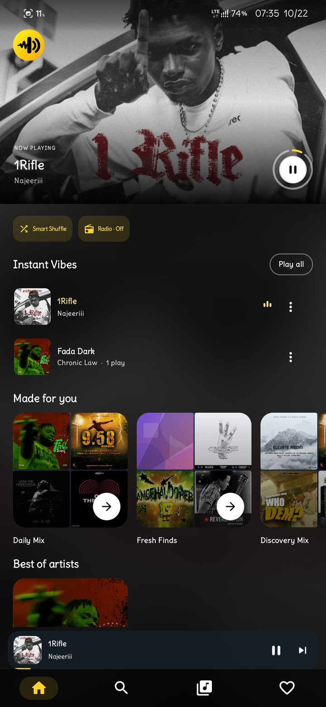
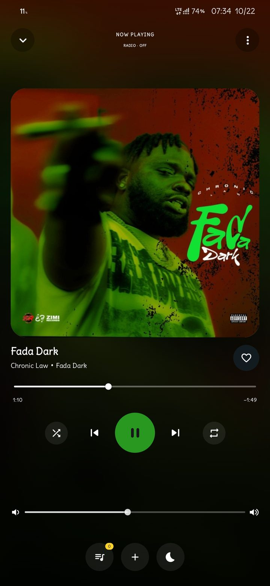
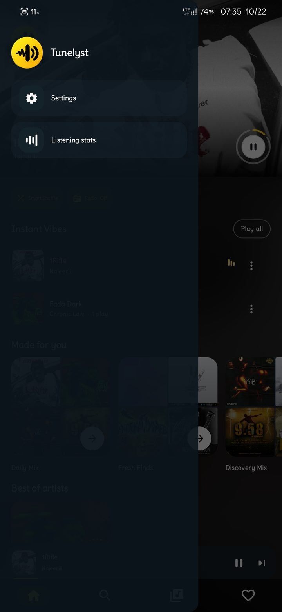

Your library
Browse songs, albums, artists, favorites, and playlists in one place.
Tunelyst plays music saved on your Android phone, with personal mixes, thoughtful playback controls, and no account or streaming.
For Android 8.0 and newer. On GitHub Releases, choose the app file to download.

A calm place for the songs already on your phone, with the tools you need close at hand.
Browse songs, albums, artists, favorites, and playlists in one place.
Find familiar favorites and new combinations shaped by your listening.
Manage what plays next, set a sleep timer, and keep listening in the background.
Review library cleanup suggestions yourself. Nothing is deleted without your approval.
A simple, dark design that keeps your music in focus.


Your listening stays on your phone. Tunelyst doesn’t ask you to sign in, show ads, or connect to the internet. It doesn’t stream or upload your music. You decide if and when to export a backup.
Download Tunelyst from the latest GitHub release and follow Android’s install prompt.